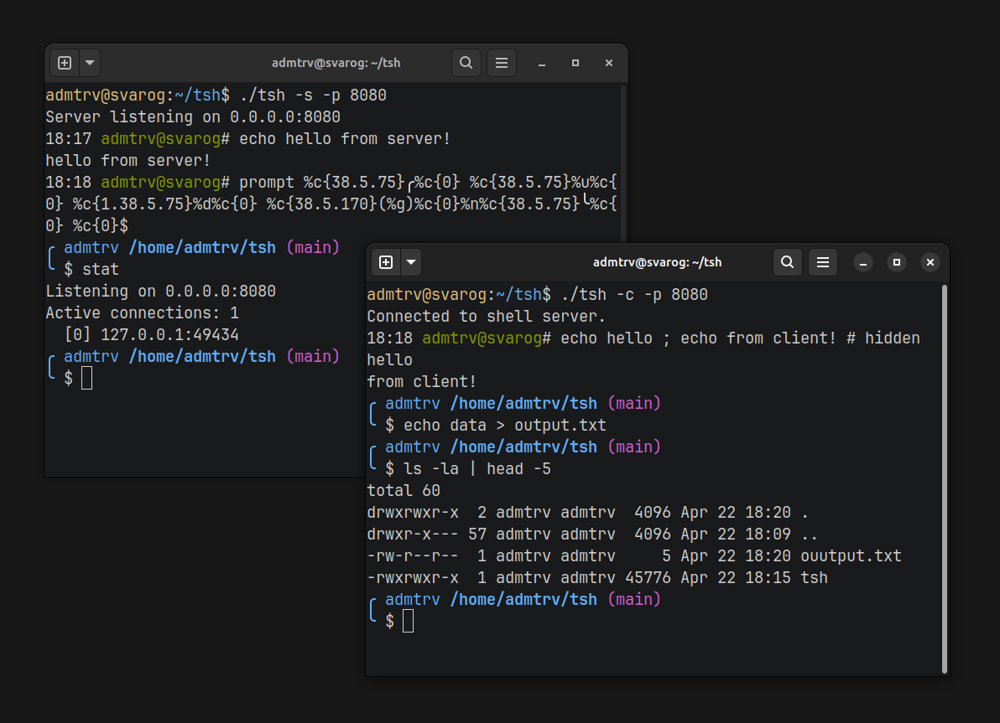

About

tsh is a simple interactive shell with client-server architecture over TCP sockets, written in pure C for Linux. The same binary runs in either role: as a server it listens for connections and serves multiple clients, as a client it connects to a remote instance and gives you a shell on it.
Beyond running commands, it supports the special characters you would expect from a shell: comments with #, command separation with ;, input and output redirection with < and >, and pipes with |. Internal commands let you manage the session itself. Usage:
./tsh [-s|-c] [-p port] [-i addr] [-f file] [-d] [-t sec] [-h]A server can be bound to a specific interface and port, run as a daemon in the background, or configured to disconnect idle clients after a timeout. Both roles can execute a script file at startup before dropping into interactive mode.
Prompt Customization
The part of this project I am most proud of is the prompt customization system. Rather than hardcoding the prompt, I built a small format language for it:
%u username
%h hostname
%t current time (HH:MM)
%d current directory
%g git branch or commit
%n newline
%c{code} ANSI color or style
%<char> escape a special character
The prompt internal command changes it at runtime. Example simple minimal prompt:
12:30 admtrv@host# prompt %>
> echo hello
hello
>Classic bash prompt:
12:30 admtrv@host# prompt %u@%h:%d$
admtrv@host:~$ echo test
test
admtrv@host:~$Cool ohmyzsh like prompt:
12:30 admtrv@host# prompt ╭%t %u %>%>%> %d (%g)%n╰$
╭12:30 admtrv >>> /home/admtrv (master)
╰$ echo cool
cool
╭12:30 admtrv >>> /home/admtrv (master)
╰$Or with colors:
12:30 admtrv@host# prompt %c{38.5.75}╭%c{0} %c{38.5.75}%u%c{0} %c{1.38.5.75}%d%c{0} %c{38.5.170}(%g)%c{0}%n%c{38.5.75}╰%c{0} $
╭ admtrv /home/admtrv/tsh (main)
╰ $